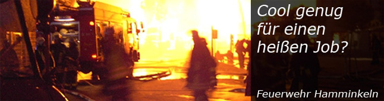

Einsatzabteilung

Verantwortlich sein: für Personal und Gerät. Bereit dem Nächsten zu helfen, auch wenn's mal
brenzlig wird? Sehr gut! Wenn du in deiner Freizeit aktiv zur Gefahrenabwehr und -bekämpfung
beitragen möchtest, freuen wir uns auf dich. Denn wir bieten Stellen als
FEUERWEHRFRAU und FEUERWEHRMANN
In unseren 6 Einheiten im Stadtgebiet erwartet dich eine ehrenamtliche, abwechslungsreiche
Tätigkeit mit viel Verantwortung und hervorragenden Möglichkeiten zur Weiterbildung. Nimm
die Herausforderung an. Unterstütze unser Team als Feuerwehrfrau oder Feuerwehrmann
in unserer Stadt.
Melde dich JETZT an!
Ausbildung, Schutzkleidung und Weiterbildung werden gestellt.
Unverbindliche Informationen über unsere Tätigkeiten sowie Besichtigungen der Gerätehäuser
und der Fahrzeuge sind während der Dienstabende möglich.
Unterstützungsabteilung
Die Feuerwehr Hamminkeln braucht nicht nur Einsatzkräfte im Gefahrenbereich – auch hinter den Kulissen gibt es viel zu tun.
Ob Logistik, Versorgung, Technik oder Organisation: In unserer Unterstützungsabteilung kannst du mit deinen Fähigkeiten einen wichtigen Beitrag leisten und unsere aktive Mannschaft entlasten.
Du möchtest dich engagieren, aber nicht in den direkten Einsatzdienst einsteigen? Dann bist du bei uns genau richtig! Wir freuen uns über jede helfende Hand und jedes Talent, das unser Team bereichert.
Jetzt mitmachen und Teil der Feuerwehr-Familie in Hamminkeln werden!
Melde dich hier direkt oder schaue weiter unten nach Kontaktdaten der Einheit in deinem Stadtteil.
Jugendfeuerwehr

Wer hat als Kind nicht schon mal davon geträumt Feuerwehrmann / - frau zu werden und mit Blaulicht und Martinhorn zu einem Einsatz zu fahren?
Bei uns werden diese Kindheitsräume Wirklichkeit!
Vom 10. bis 16. Lebensjahr hast du die Möglichkeit der Jugendfeuerwehr beizutreten.
Du lernst nicht nur feuerwehrtechnische Aufgaben und Geräte kennen, wie die Fahrzeuge funktionieren
und wie ein Einsatz abläuft, sondern du lernst auch viele neue Kammeraden kennen, die dich vielleicht ein
Leben lang in der Feuerwehr begleiten und zu richtigen Freunden werden.
Kinderfeuerwehr
Die Kinderfeuerwehr ist für Kinder im Alter zwischen 6 und 12 Jahren und erstreckt sich über das gesamte Stadtgebiet.
Die Kinderfeuerwehr trifft sich an verschiedenen Feuerwehrhäusern im jeweiligen Stadtteil. Die Treffen finden 14- tägig an einem festen Wochentag statt.
Neben Spiel, Spaß und Bewegung sind auch Themen wie Brandschutzerziehung, Verkehrserziehung,
Umweltschutz und Erste Hilfe in den Diensten untergebracht. Es wird darüber hinaus auch gebastelt,
gekocht und immer wieder der Bezug zur Feuerwehr hergestellt.
Die Kinderfeuerwehr Hamminkeln orientiert sich am
Leitbild der Kinderfeuerwehr Nordrhein-Westfalen
und setzt sich für starke Kinder, soziales Engagement
in der Gesellschaft sowie für die Einhaltung der
Kinderrechte ein.
Hast du Interesse an der Kinderfeuerwehr?
Oder möchtest du weitere Informationen?